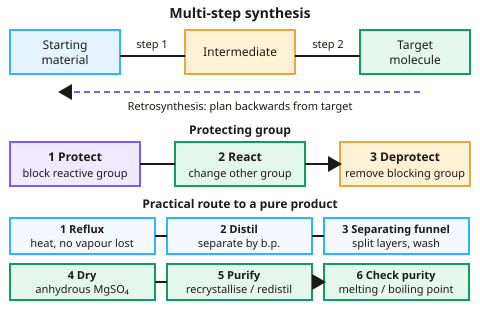

A-level Chemistry Year 13 · Topic 5
Organic synthesis, NMR and chromatography
Organic synthesis, NMR and chromatography brings all your organic chemistry together and adds the tools chemists use to prove what they have made.
We will plan multi-step syntheses, including protecting groups and retrosynthesis, and use carbon-13 and proton NMR spectroscopy to work out structures.
Finally we look at chromatography, from TLC to gas chromatography combined with mass spectrometry.
- 3 subtopics
- 152 questions
- Free: 5.1 notes and 10 questions
In this topic
- 5.1Organic synthesisFree below · 23 questions
- 5.2Nuclear magnetic resonance spectroscopyOpen in Full Marks · 64 questions
- 5.3ChromatographyOpen in Full Marks · 65 questions
5.1 · Free notes
Organic synthesis

Key points
- Organic synthesis often requires several steps, converting functional groups via a chosen synthetic route.
- Protecting groups temporarily block a reactive functional group so another reaction can occur elsewhere, before being removed.
- Retrosynthesis works backwards from a target molecule to suggest possible starting materials and reactions.
- Practical techniques include reflux, distillation, use of a separating funnel, drying with an anhydrous agent, and purification by recrystallisation or redistillation, with purity checked by melting or boiling point.
In more detail
- Considerations in synthesis: number of steps (fewer = higher overall yield), atom economy, cost and hazards of reagents, solvents used, and energy needed.
- Protecting a group: an –OH group can be converted to an ester or ether so it does not react, then hydrolysed back at the end.
- Worked retrosynthesis: target ethyl ethanoate ← ethanoic acid + ethanol; ethanoic acid ← ethanol (oxidation); so ethanol is the only starting material needed.
- Green chemistry: use catalysts, renewable feedstocks, safer solvents (or none), and high atom economy reactions to reduce waste and energy.
Practice
Organic synthesis: 10 questions
Pick an answer to check it, or open the answer for the explanation.
1. What is a synthetic route?
- A single reaction only
- A sequence of reactions converting a starting material into a target molecule
- A type of catalyst
- A purification method
Show answer
B: A sequence of reactions converting a starting material into a target molecule. Multi-step syntheses are common in organic chemistry.
2. Why might a protecting group be used?
- To make a molecule more reactive everywhere
- To temporarily block a functional group so another reaction can occur elsewhere
- To permanently change the molecule
- To increase yield only
Show answer
B: To temporarily block a functional group so another reaction can occur elsewhere. It's removed once the other part of the synthesis is complete.
3. What does retrosynthesis involve?
- Working forwards from starting materials
- Working backwards from the target molecule to suggest starting materials
- Measuring reaction rate
- Testing for functional groups only
Show answer
B: Working backwards from the target molecule to suggest starting materials. This is a useful planning tool for multi-step synthesis.
4. What piece of equipment separates an organic product from an aqueous layer?
- A burette
- A separating funnel
- A condenser
- A thermometer
Show answer
B: A separating funnel. Immiscible liquids can be separated by density in a separating funnel.
5. How can the purity of a solid organic product be checked?
- By its colour
- By comparing its melting point to the known value; a sharp melting point indicates purity
- By its smell
- By its mass alone
Show answer
B: By comparing its melting point to the known value; a sharp melting point indicates purity. Impurities usually lower and broaden the melting point range.
6. Why might a chemist choose an acid anhydride rather than an acyl chloride in synthesis?
- It reacts faster and more violently
- It is generally safer and produces a less corrosive by-product
- It never reacts with alcohols
- It always gives a lower yield
Show answer
B: It is generally safer and produces a less corrosive by-product. Acid anhydrides are often preferred for practical and safety reasons.
7. Which sequence converts bromoethane into propanoic acid?
- Mg in dry ether; then H₂O
- KCN in ethanol, heat; then dilute HCl, reflux
- Excess NH₃; then HCl
- NaOH(aq), reflux; then K₂Cr₂O₇
Show answer
B: KCN in ethanol, heat; then dilute HCl, reflux. KCN gives propanenitrile, adding one carbon. Hydrolysis of the nitrile with dilute acid under reflux gives propanoic acid.
8. Why do multi-step syntheses often give a low overall yield?
- Reagents are used in less than 1:1 ratios
- Losses at every step accumulate
- Intermediates always decompose
- Each step needs a higher temperature
Show answer
B: Losses at every step accumulate. Each step has losses from incomplete reaction, side reactions and purification, and the fractional yields multiply.
9. When purifying a liquid by redistillation, which fraction is collected?
- The residue left in the flask
- The first few drops
- All liquid collected below 100 °C
- The fraction distilling at the product's known boiling point
Show answer
D: The fraction distilling at the product's known boiling point. Collecting only the fraction that distils at the product's known boiling point leaves lower and higher boiling impurities behind.
10. Anhydrous magnesium sulfate is added to a crude liquid organic product. What is its purpose?
- To neutralise acidic impurities
- To raise the boiling point
- To separate the layers
- To remove traces of water
Show answer
D: To remove traces of water. Anhydrous magnesium sulfate absorbs water by forming a hydrate. It dries the liquid and is then removed by filtration or decanting.
Keep going in Full Marks
Full Marks has 23 questions on Organic synthesis (13 more than here), set out in practice levels. You also get notes and 3D models for all 3 subtopics of Organic synthesis, NMR and chromatography, plus games, timed exams and past papers.
On your exam board
- AQATopic 3.3.14: Organic synthesis, Topic 3.3.15: Nuclear magnetic resonance spectroscopy, Topic 3.3.16: Chromatography
- OCR ATopic 6.2.5: Organic synthesis, Topic 6.3.1: Chromatography and qualitative analysis, Topic 6.3.2: Spectroscopy
- OCR BTopic PL: Polymers and life, Topic CD: Colour by design
- EdexcelTopic 18: Organic chemistry III, Topic 19: Modern analytical techniques II
- CambridgeTopic 36: Organic synthesis, Topic 37: Analytical techniques